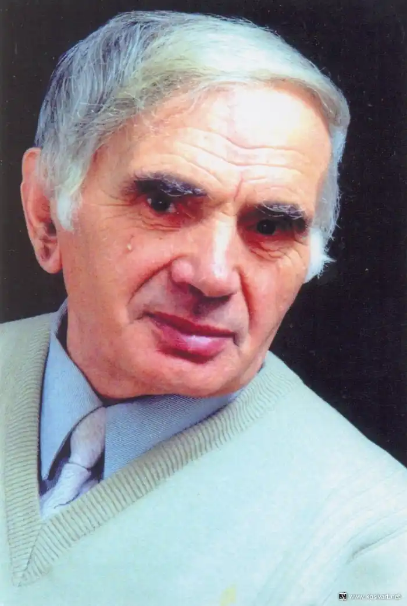

Народився Богдан Радиш у гірському селі Рожневі на Івано-Франківщині, у хаті під заржавілою стріхою, над річкою Рибницею. За хатою — поле, перед хатою — луги, річка, а далі — гори, ліс. З ранньої весни до літа не вгаває соловейком радість і печаль. Жайвір тримає на крихітних крильцях велике голубе небо. Воістину райський куточок України!
Від хати — стежка, а далі — гостинець — дорога, якою Богдан уперше пішов до школи. Це було у важкому 1942 році.
Запах війни, страху, голоду і смерті — ось такими були запахи дитинства майбутнього митця. Дитинства обідраного, невтішного, обкраденого. У 1950 році вступив до Косівського училища декоративно-прикладного мистецтва. Перед дивом творчості народних майстрів-різьбярів оторопіла його тоді ще дитяча душа. Вивчення світового та українського мистецтва, гуцульського народного мистецтва роблять своє. У цьому мистецькому оточенні Богдан Радиш відчув своє друге народження. З’являються проби пера, — крилатий кінь несе у дивовижну країну, що зветься " Поезія". 1954 рік позначений початком військової муштри у радянській армії. Довелося змінити пензель, різець і перо на гайки, болти і мотори (служив Богдан автомеханіком спецавтотранспорту повітряних сил). Військову службу проходив у Росії, а потім — у Польщі. У 1957 році повернувся в рідне училище і через рік, в 1958 році, закінчив його. Тепер дорога вела Б. Радиша до Криму, в м. Алушту, за направленням на роботу. Тут він працював і водночас навчався. Та білі магнолії південного берега Криму не змогли замінити пахучих смерекових гаїв і, через два роки, в 1960-му, Богдан повернувся знову у рідні Карпати, в Косів, на Гуцульщину. Тут він викладає в Косівському училищі курс композиції й одночасно пише поезії. Вони з’являються в обласних та республіканських виданнях "Літературна Україна", "Україна", "Жовтень", "Дніпро", "Перець", "Вітрила", в щоквартальнику "Поезія", в колективних збірниках: "Зорі назустріч", "Суцвіття", "Перевал". Запланована на 1969, а потім перенесена на 1971 рік перша поетична книжка була "зарізана" після хрущовської "відлиги". Дещо "обскубана", вона побачила світ аж через 12 років. Після того як за Б. Радиша заступилися Київські письменники, найбільше А. Кацнельсон, майже одна за одною, з’являються книжки поезій "Калинова галузка" (1982), "Малюнки на променях" (1984), "Полум’я пам’яті" (1985). У 1983 р. Богдан Радиш став членом Спілки письменників України. 1990 року виходить нова книжка поезій "Щедре світло землі". В роки незалежності України побачили світ зібрання ліричних поезій, рубаї, лапідаріїв, притч, приказок, прислів’їв, афоризмів. Вийшли поетичні збірки "Сподівання і сум" (1994), "Сльоза на камені" (1995), "Чумацький віз" (1996), "Між ударами серця" (1997), "Притчі" (1999), "Хитрий котик Василько" (2000) та інші На його тексти композитори пишуть пісні. Серед них Лев Димінський, Володимир Спольницький, Євген Боднаренко, Володимир Домшинський, Тетяна Стасюк, Остап Гавриш, Мирослав Дзюба, Зоя Слободян та інші. Нині Богдан Радиш очолює колектив Косівської Центральної бібліотеки та районну організацію Всеукраїнського Товариства "Просвіта" ім. Тараса Шевченка. Є лауреатом літературних премій імені Михайла Павлика, Марійки Підгірянки та Василя Стефаника.